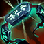
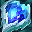
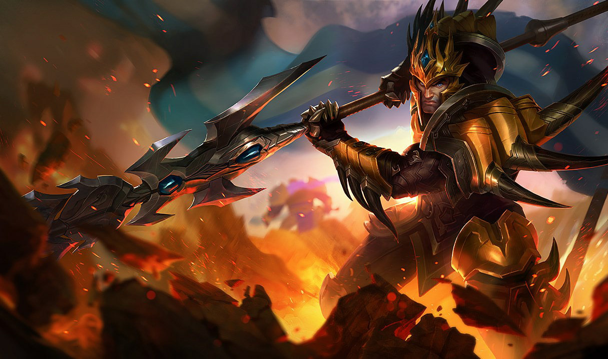
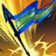
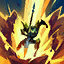
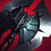
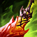
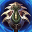

Steelcaps
Steelcaps
Kaenic Rookern · Spirit Visage
Spirit Visage
Frozen Heart · Randuin's · Thornmail
How to read the labels: VERIFIED multi-source, adversarially fact-checked · SINGLE SOURCE one reputable source · REASONING game-knowledge, verify in your own games. Stats are lolalytics patch 26.13, Emerald+ unless marked. Requested by Campbell (soup minion#NA1); a special chapter covers your question — what do I do when I'm constantly invaded? — in §6.
VERIFIED Jarvan IV is S- tier, the #7 jungler of 77 at Emerald+ (52.1% WR, n=153,547) and #6 of 80 at Gold (50.4%, n=94,060) on 26.13. He hasn't been patched since 25.19 — everything here is stable, not flavor-of-the-month.
VERIFIED You, specifically (op.gg match payloads, position fields confirmed, 2026-07-06): Platinum 3 solo queue, 59% WR — climbing. Your Jarvan jungle is 4 solo-queue games old and it's working: 3W–1L, 5.7 KDA, 71% kill participation, three of those duo with the guy who commissioned this guide (his Naafiri mid + your J4 is 3–1 together). You've already beaten Rengar, Ambessa and Nasus junglers; the one loss was the Shen game (0/4/2 in 19 min — the kind of early spiral §6 is about). Your longer-running jungle pick, Nunu, sits 13W–18L (42%), and those losses cluster against early duelists who invade: Viego 0–3, Kayn 0–2, Lee Sin 0–2 — the exact problem §6 solves, and J4 plays all three at even-or-better (§7). One more number from your last four games: zero control wards. Hold that thought until §6c.
REASONING What he is: the best level-2–3 engage jungler in the game — E-Q knockup is a gank that works from behind a wall, before most junglers have a gank at all. What he is not: a 1v1 duelist (dedicated duelists beat him in isolated fights — see §6 and §7) or a late-game carry (he falls off; his job after 25 minutes is engage + peel, not damage). Your whole game plan flows from this: use early tempo to bank objectives, then cash out before scaling junglers outgrow you.
| Ability | What it actually does |
|---|---|
| P · Martial Cadence | VERIFIED First basic attack on each target: 8% of their CURRENT health as bonus physical damage (min 20). Capped at 400 vs monsters only — uncapped vs champions. Per-target cooldown 6/5/4/3s by level. Jungle engine: first hit on every buff is huge. In fights: auto early while they're full HP, and spread autos across fresh targets. |
| Q · Dragon Strike | VERIFIED 90–250 (+145% bonus AD) physical in a line, shreds 10–26% of armor for 3s, CD 10→6s, 0.4s cast. If the lance touches your E flag, you dash to it, knocking up everything on the path for 0.75s — and the dash executes even if you're rooted or grounded when it connects. |
| W · Golden Aegis | VERIFIED Shield 60–140 (+70% bonus AD) +1.3% of your max HP per enemy champion hit (4s), and slows all of them 15–35% for 2s. Flat 9s CD. Rule: cast it after you land in their team, not before — every champion in the 625 radius makes it bigger. |
 E · Demacian Standard | VERIFIED Passive: +20–30% attack speed, permanently (this is why it's your level-1 skill for clearing). Active: flag deals 80–240 magic, stands 8s, gives the same AS aura to nearby allies (radius 1000). Range 860, no cast time — which is what makes the instant E-Q possible. |
 R · Cataclysm | VERIFIED 200/325/450 (+180% bonus AD) physical, 0.35s displacement-immune leap, then a 3.5s ring of real terrain. Enemies near the edge get shoved out; everyone else gets pulled in. Recast (available after 0.75s) collapses the wall. It IS crossable by dashes and Flash — R traps immobile champions, not mobile ones. CD 120/105/90. |
| Combo | Buttons | When & why |
|---|---|---|
| Instant E-Q (the gank) | E+Q same instant | E has no cast time, so buffering both fires a near-instant 0.75s knockup at ~770 range. This is your bread and butter — from fog, over walls, before they can react. |
| Full gank string | E→Q → AA → W → (R) | Knockup → auto (passive chunk while they're full HP) → W slow so they can't walk away when the knockup ends. R only if they'll escape or to wall off help. |
| EQ-Flash | E→Q, Flash mid-dash | VERIFIED Flash during the E-Q dash: the dash stops but the knockup still applies at your new position. Direction correction — they sidestep, you Flash the knockup back onto them. |
| Jail-break | R → E outside wall → Q | Trap them in R, then E-Q over your own wall and leave. The cage stays up 3.5s without you in it. Use when their team collapses or you're low. |
| Escape E-Q | E over terrain → Q | Your only escape — a wall-hop on a ~10–12s cooldown. If you burned E-Q engaging and the fight turns, you are not leaving. Decide before you jump. |
| R discipline | R center-mass; recast when done | Land R so the target is inside, not on the rim (rim = shoved out). Recast the moment the kill is secured — a standing cage traps your own immobile teammates too. |
VERIFIED Tech notes: the E-Q pull executes even while immobilized (rooted mid-dash still pulls). Enemies dodge R with any dash/blink — hold it until their dash is down, or use it as a wall (cut a choke, block a path) rather than a cage vs mobile champs. W's slow is your gank stick pre-6: E-Q → AA → W keeps them in auto range for your laner.
| Piece | Choice | Notes |
|---|---|---|
| Keystone | Conqueror (Precision) | VERIFIED 94.3% pick, 52.1% WR (n=144,761). Nothing else is close — your fights are extended skirmishes and Conqueror stacks fully in them. |
| Minors | Triumph · Legend: Alacrity · Coup de Grace | VERIFIED The standard page. Directional upgrades: Legend: Haste 53.4% (n=7,139), Cut Down 52.7% (n=15,234) — when to take it is in §4d. |
| Secondary | Inspiration: Cosmic Insight + Magical Footwear | VERIFIED 77% of pages, 52.4%. Shards: Attack Speed / Adaptive / Health. |
| Summoners & start | Flash + Smite · Scorchclaw pup + potion | VERIFIED Flash+Smite is 99.9% of games. Scorchclaw (red pet) 63% pick; its slow-and-burn helps ganks stick. |
VERIFIED Skill order: E at 1 (attack speed for the clear) → Q at 2 → W at 3 (83.5%). Max Q > E > W, R at 6/11/16 — 95% consensus, 53.0% WR.
REASONING The most common Plat itemization mistake is buying five individually good items that don't cooperate. J4 has exactly two coherent builds, and every purchase should know which one it belongs to. The numbers below are ordered pairs — "what people who bought X first actually bought second, and how it went" — which is much stronger evidence than the usual per-slot popularity tables.
| Path | Order | Why & when |
|---|---|---|
| A · Bruiser (your default) | Sundered Sky → boots →  Black Cleaver → Death's Dance / defense (§4c) | VERIFIED The mass-consensus line: Sundered→Cleaver, 53.1% over n=50,352 — the single most-played and best-proven pair. With Mercs in the middle: 53.7% (n=15,078). REASONING Hidden synergy: these two carry +800 HP, and your W shields +1.3% of max HP per champion hit — the bruiser path literally buys you a bigger Aegis. Take this when even or behind, into bruisers/tanks, or whenever unsure. |
| B · Tempo lethality (ahead by first back) |  Profane Hydra → Axiom Arc (or Voltaic — see box) → boots → DD / Serylda's | VERIFIED The stat-winning line: Profane→Axiom 54.9% (n=16,256), and Profane→Axiom→Death's Dance hits 56.8% (n=1,862). Faster clears (Cleave splash), and kills feed Axiom's Flux into more Cataclysms — R's 180% bonus-AD ratio loves the flat AD. But it's a lead multiplier: two squishy damage items and no HP means it amplifies whatever game state you're in. Ahead = snowball; behind = paper. |
| The bridge | Eclipse first, decide later | VERIFIED Eclipse→Sundered: 52.9% (n=14,350). Eclipse procs trivially off E-Q+auto (6% max-HP hit + shield) and commits you to neither path. Fine pick when the game's unreadable at first back — but don't follow it with Cleaver (50.4%, n=2,366, below champion average). |
A sharp question came up while building this guide: Axiom Arc's 55.4% win rate at second item looks great — but is it any good without Profane Hydra in front of it? Short answer: no, and the evidence agrees three separate ways.
VERIFIED 1. The players have already voted. Of 153,547 games, Sundered→Axiom was played 33 times. Axiom's whole slot-2 win rate is Profane-first games wearing a disguise; as a first item Axiom is the worst on the list (51.0%, n=518). Nobody builds it alone, and the few who try don't prosper.
VERIFIED 2. The armor math is superlinear. Lethality is flat armor pen, and each point is worth more as armor approaches zero. Against an 80-armor squishy: first 18-lethality item = +11% damage; the second = +14 more (+25% total); a third = +39.5% total. The second lethality item outperforms the first — they recruit each other. Meanwhile, against a 220-armor tank one lethality item is worth just +6%, where Cleaver's 30% shred stacked with your own max-rank Q (another 26%) is worth ~+50%. One lethality item in a bruiser build is the worst point on the whole curve.
VERIFIED 3. Axiom itself pays for lethality. Since 26.09, Flux refunds 10% (+0.25% per point of lethality) of R's cooldown on takedown. Axiom alone: 14.5% per takedown. With Profane: 19%. Add Edge of Night: 22.8%. The item's own passive scales with committing to the archetype.
REASONING Verdict: Axiom is a Path B item, full stop. On Path A your second item is Black Cleaver and there is no "but I'm getting takedowns" exception — takedowns on Path A are what Cleaver stacks and Death's Dance resets are for.
VERIFIED And if Axiom just isn't your item — fair, it only pays when fights chain — the no-Axiom Path B has real data behind it. Best swap: Voltaic Cyclosword second — it's what high-elo Jarvans pick when they skip Axiom (Diamond+ 58.7% over n=958, Masters+ 56.4%, ~10× more played there than any other non-Axiom lethality second), and its Energized proc — your next auto after an ability hit deals 9% of the target's current HP — is practically designed for the E-Q → auto gank opener. At your elo it's 51.9% (Plat, n=574) vs Axiom's 53.5%, so you're giving up ~1.5pp for the comfort. Second option: Sundered Sky second (Plat 52.5%, n=4,034) — walks the build halfway back to Path A and is the more forgiving line. What NOT to do instead: Death's Dance second is mediocre at most tiers, and Collector or Maw second are disasters (42–47%).
| Item | Stats (wiki-verified 26.13) | The job |
|---|---|---|
| Sundered Sky 3100g | 45 AD, 400 HP, 10 AH · next basic vs each champ auto-crits and heals ~base AD + 6% missing HP (10s per target) | Path A opener. The forgiveness item — every skirmish starts with a crit-heal, and like your passive it re-procs per fresh target. 51.5% as first item but the pair data (§4a) is what sells it. |
| Black Cleaver 3000g | 40 AD, 400 HP, 20 AH · physical damage stacks Carve: 6% armor reduction per stack, 30% at 5 · +20 MS on hit | Path A second, always. E-Q + passive + autos stack it near-instantly, it layers with Q's 10–26% shred, and reduction is a debuff on them — your whole team hits the target harder. The anti-tank half of your kit. |
| Profane Hydra 2850g | 55 AD, 18 lethality, 10 AH · Cleave: basics splash 40% AD · active: 80% AD burst, 10s CD | Path B opener: the fastest clears J4 has, ganks with burst attached. Note: the execute on its active was removed — any guide still praising "Hydra executes" is stale. |
| Axiom Arc 2750g | 55 AD, 18 lethality, 20 AH · Flux: takedown within 3s refunds 10% (+0.25%/lethality) of R's total CD | Path B second. Chain-Cataclysm engine — a 2-takedown teamfight refunds ~40% of R with Profane's lethality aboard. Never without lethality friends (see box). |
| Eclipse 2900g | 60 AD · 2 hits on a champ within 2s: 6% max-HP physical + a shield, 6s CD | The bridge first item — E-Q + auto procs it instantly on the gank target. Keep Sundered as the follow-up. |
| Serylda's Grudge 3000g | 45 AD, 15 AH, 35% armor pen · slows sub-50%-HP targets 30% | Path B's anti-tank third (60.4% by-game WR when bought). Percent pen is what lethality isn't: worth most against high armor (+32% alone vs a 220-armor tank). VERIFIED Shop rule — Limited to 1 Fatality item: Serylda's, Black Cleaver, Last Whisper, Lord Dominik's, Mortal Reminder and Terminus share one group; you can never own two. So on Path A your anti-tank plan is Cleaver + your Q shred (~+50% together) — Serylda's isn't an option there. Duo tech: Cleaver's shred is a debuff on the target, so a teammate's Serylda's stacks with your Cleaver (~+60% for them). |
| Edge of Night 3000g | 50 AD, 250 HP, 15 lethality · spellshield, 40s recharge | Path B third vs pick comps: you jump in first, so the Morgana Q aimed at you eats the shield instead. Also +15 to the Flux refund math. |
| Hubris 2800g | 55 AD, 18 lethality, 10 AH · takedowns grant stacking AD (12 +3/stack for 90s) | Path B swap-in for Axiom only when hard snowballing (3+ kills pre-item). Pure win-more; loses to Axiom's utility otherwise. |
| Slot | Choice | Notes |
|---|---|---|
| Boots | Mercs / Steelcaps | VERIFIED Steelcaps are picked more (48%) but Mercs win more (54.0% vs 51.9%; same gap at Gold). Pick by their damage profile — but when in doubt vs mixed comps, Mercs: you engage into the CC every fight. |
| 3rd item (the pivot) | Death's Dance | VERIFIED 58.5% at slot 3 (n=25,645) — the best third item on either path. 60 AD + 50 armor, damage taken is deferred, and a takedown cleanses the deferred damage entirely — in a chain-engage kit, every reset makes you briefly unkillable. After two damage items you pivot defensive: you're the engage button, and you die first if you don't. |
| The closer | Guardian Angel | VERIFIED 64.3% at slot 3, 66.4% at slot 4 — heavily survivorship-inflated, but the pattern is real: when you're the first man in, a revive converts "engage and die" into "engage twice." |
| vs AP | Maw ·  Kaenic Rookern ·Spirit Visage | VERIFIED Maw when their burst is AP; Rookern (58.5% by-game) into sustained AP comps; Visage when you have a healer (it amplifies Sundered's heal too). |
| vs AD / crit |  Frozen Heart · Randuin's · Thornmail | VERIFIED Frozen Heart 54.6% at slot 3 vs attack-speed comps; Randuin's vs crit; Thornmail when their frontline heals. REASONING Every 400-HP defense item is also a bigger W — J4's tank items double-dip. |
| Anti-utility | Serpent's Fang · Sterak's | VERIFIED Serpent's when two+ enemies stack shields; Sterak's when they burst you the instant you land (its shield + your W + DD deferral stack into real bulk). Note: Sterak's and Maw share the Lifeline group — the shop allows only one. |
REASONING Path A vs Path B (§4a) shouldn't be a habit — it's decided by four loading-screen reads:
| Read | What it changes |
|---|---|
| Their tank count | SINGLE SOURCE Lethality breakpoints (Dodge.gg 2026): under ~80 armor lethality wins; 80–120 even; over ~120 %pen wins. 0–1 tanks: Path B is live — its targets exist. 2+: Path A — Cleaver + your Q shred is the pen plan (Serylda's is Fatality-blocked next to Cleaver). 3+ and low damage: Path A, and convert a damage slot into Frozen Heart/Randuin's — you win the 35-minute front-to-back game, and R becomes a wall that cuts their frontline off from your carries rather than a cage on theirs. |
| Their damage & delivery | AP burst → Maw 3rd. Sustained AP → Rookern/Visage. Crit/auto comps → Frozen Heart or Randuin's + Steelcaps. Abilities-and-CC comps that barely auto → Mercs (Steelcaps' passive only reduces basic attacks). Deleted mid-R-leap by burst → Sterak's — but it shares Lifeline with Maw: one only. |
| YOUR frontline | VERIFIED "If you are the only melee champion on your team, you need to be able to take hits." As the jungler you're usually the engage button: no tank or bruiser beside you = Path A is mandatory and defense arrives 3rd, not 4th. A Sejuani-style top plus a Leona is your Path B license. |
| Their healing & shields | SINGLE SOURCE Anti-heal pays when they heal 1,000+ HP per teamfight (Aatrox/Mundo/Vladimir/Soraka/Yuumi/Briar/Warwick tier). Prefer a laner to carry the GW — your slots are engage tools — and only one per team ("two GW items is still 40%, not 80%"). Shield stackers → Serpent's Fang (§4c); shields and healing are different problems. |
VERIFIED Runes by comp: Cut Down currently reads "8% increased damage to champions above 60% max health" — take it over Coup de Grace into HP-stacker comps (they sit above 60% all fight) and when your job is the opening EQ+R on full targets; keep Coup de Grace vs squishy comps where fights end in executes. Vs 3+ hard-CC comps: Legend: Tenacity no longer exists (removed 14.10) — Mercs or a Resolve/Unflinching secondary are the real tenacity answers.
VERIFIED Patch 26.01 sped up the whole early jungle and most guides never updated: buffs now spawn at 0:55 (was 1:30), Gromp/Krugs at 1:07 (was 1:42), first scuttle at 2:55 (was 3:30). If a guide says "scuttle at 3:30," it's stale. Everything happens ~35s earlier now — including the enemy's invade window.
SINGLE SOURCE Standard route (jungler.gg 26.12, matches the lolalytics skill data): Red brambleback (E first for attack speed) → Krugs → Raptors — that's level 3 around 2:05–2:15, your first E-Q gank or scuttle window — → Wolves → Blue → Gromp, full clear ~3:15–3:35 at level 4, then scuttle/gank. Start Raptors→Red→Krugs when you want the faster level-3 gank on bot side. REASONING E-Q the multi-camps (raptors, wolves, krugs) — the knockup path hits everything; drop E for its AS aura before big single targets. W on cooldown at buffs/Gromp to shave damage taken. Aim to end the first clear above 60% HP; time yourself once in practice tool.
| Camp | First spawn | Respawn | Gold | XP |
|---|---|---|---|---|
| Blue Sentinel / Red Brambleback | 0:55 | 5:00 | 90 | 95–142 |
| Wolves / Raptors | 0:55 | 2:15 | 85 / 75 | 80–120 / 70–105 |
| Gromp / Krugs | 1:07 | 2:15 | 80 / 81 | 120–180 / ~90–134 |
| Rift Scuttler | 2:55 | 2:30 | 55–121 | 100–150 |
VERIFIED against wiki camp pages 2026-07-06. Respawn timers become visible to both teams 60s out for buffs, 10s out for small camps — that's a tracking tool (§6). Camps level with the game's average, so late camps aren't XP-dead.
REASONING "If I can't find camps I look for ganks" is half right, and the half that's right is genuinely right — Jarvan is a gank champion, and doing something beats standing in an empty jungle. The problem is the ungated version. A gank into a bad lane state gives you 0 gold and 0 XP while the invader who took your camps farms freely — you don't just fail to gain, you fall further behind on both ends. That's the compounding loss that turns one stolen camp into a lost jungle. The fix isn't "stop ganking" — it's a 10-second checklist before you commit, and a better default when the checklist fails.
VERIFIED (Dodge.gg 2026 jungle guide) Count these before walking to a lane: (1) enemy pushed past the river line · (2) their Flash/escape is down · (3) your laner has CC to chain your knockup · (4) the wave is pushing toward your tower · (5) you have a level or item edge · (6) lane likely unwarded. Fewer than two: don't go. "A jungler who waits for the right gank outperforms a jungler who ganks constantly with low success." One more that's yours specifically: REASONING never gank a losing lane to "help" — you're feeding a shutdown into the player already beating your teammate.
| Play | When | How |
|---|---|---|
| 1. Mirror-farm (the default) | You find a camp gone, or spot him entering your side | VERIFIED Don't chase — cross the map and take his matching camps. He took your Red side? His Red side is standing empty. Steal the big monster only and leave the smalls: the camp can't start its respawn timer, so his side stays dead longer. Get in, take it, get out — "each second in the enemy jungle is more dangerous than the last." |
| 2. Counter-gank (the J4 special) | You know where he is (he's in YOUR jungle) | REASONING An invader's position is information. If he's eating your bot-side camps, he is not defending his top laner — and you have the best level-3 engage in the game. This is the disciplined version of your instinct: gank because you know where he isn't, not because your camps are gone. Checklist still applies. |
| 3. Fight him (gated) | A laner can arrive before his does, OR you win the matchup | VERIFIED A 2v1 in your own jungle is a won fight — ping immediately, fight when they commit. But solo? J4 is a skirmisher with backup, not a duelist: Trundle, Poppy, Rek'Sai, Elise, Kindred, Bel'Veth all beat you isolated (§7). No help + no matchup edge = walk away. "Take camps, not fights." |
| 4. Concede & powerfarm (the reset) | Behind, low HP, or no good option | VERIFIED Swap to your opposite side and farm everything, toward the next objective spawn. The game pays you to do this: once you're >1.1 levels below average, every large monster gives +50 bonus XP per level you're behind. Catch-up XP refunds farming — it refunds nothing for wandering. Above all: don't die. Dying to the invader hands him your whole jungle on repeat. |
VERIFIED One camp ≈ 75–90 gold + a chunk of a level (table in §5); small camps respawn every 2:15, so a farming jungler banks ~3–4 camps' value in the time two failed roams take. A kill is worth 300g (400 first blood) plus XP — roughly 2–4 camps — but only if it lands, and an off-resources gank at Silver–Gold usually doesn't. Meanwhile his uncontested farm keeps flowing. REASONING The loop that beats invades long-term is boring: Clear → ONE play → reset. Farm what's up, make one checklist-approved play, recall, repeat. Windows where the "play" is strongest: level 3 (~2:15), after full clear (~3:30–4:00), your first-item spike, and level 6.
VERIFIED Numbers below are Emerald+ (the cut closest to your Plat 3, big samples). One nuance first: duel-winners and game-winners are different lists. Trundle beats you 1v1 in every early duel — yet J4 wins 55.9% of games vs Trundle (n=388), because good Jarvans just don't fight him and out-tempo the map. Losing the duel ≠ losing the game, as long as you refuse the duel.
| vs You (Emerald+, 26.13) | WR (n) | Plan |
|---|---|---|
| Feast on: Locke · Volibear · Rammus · Trundle · Zed · Lillia · Zac | 60.4 (3,471) · 57.4 (671) · 56.0 (1,046) · 55.9 (388) · 55.7 (1,595) · 55.3 (1,807) · 55.0 (1,770) | Play your normal tempo game — your engage outpaces them, or they need time you won't give. (Vs Trundle: win by refusing, see above.) |
| Your old tormentors: Viego · Kayn · Lee Sin · Graves | 50.8 (7,260) · 51.8 (5,290) · 52.5 (11,868) · 50.4 (9,048) | VERIFIED The junglers who went a combined 0–7 against your Nunu are all even or J4-favored on Jarvan. You don't have to outfarm them anymore — you out-engage them. Skirmish 2v2 at scuttle with lane priority; your E-Q is the fight-starter Nunu never had. |
| Respect: Cho'Gath · Aatrox · Ivern · Talon · Nasus · Elise · Briar · Rek'Sai | 46.9 (318) · 48.6 (1,135) · 49.0 (929) · 49.2 (3,671) · 49.4 (2,517) · 49.5 (1,576) · 49.8 (3,388) · 49.9 (1,267) | REASONING Two flavors: early bullies who beat you in skirmishes (Aatrox, Elise, Briar, Rek'Sai — don't duel, mirror-farm per §6) and scale-monsters (Cho, Nasus — kills aren't enough; convert every gank into grubs/dragon and press to end before 30, or your S-tier early game evaporates). At Gold-and-below the scaler problem gets even worse — games run longer and leads get wasted — so as a Plat player, closing speed is your edge. |
| Invade-duelists (they take YOUR camps): Trundle · Poppy · Rek'Sai · Elise · Kindred | duel-losers, game-winnable | SINGLE SOURCE Poppy W cancels your E-Q dash mid-flight; Trundle pillar traps you inside your own R; Rek'Sai/Elise out-duel you pre-6; Kindred wins if you over-commit. Vs all five: §6 rules — mirror-farm, don't duel, and ward your entrances because they're coming. |